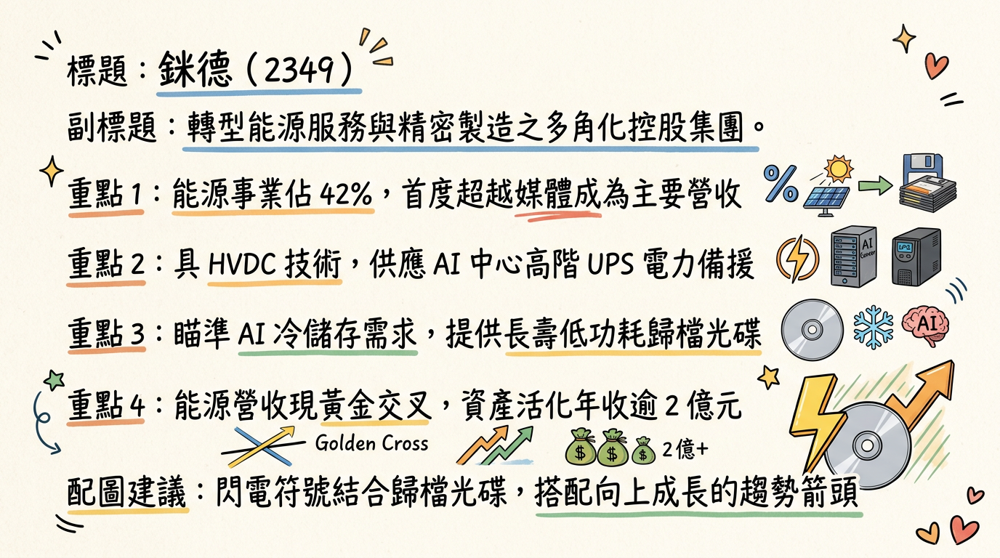
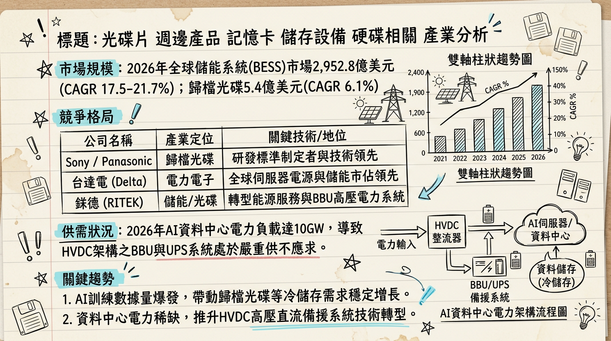
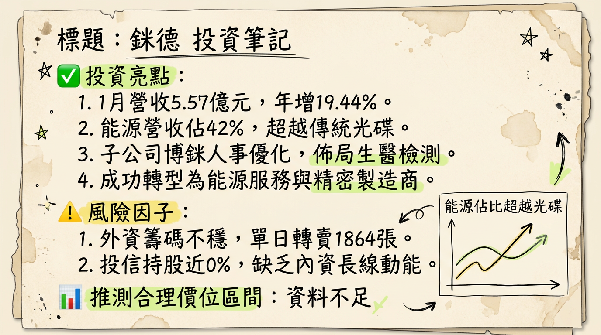

2349 錸德 深度研究報告
一句話摘要
從傳統光碟轉型能源服務與精密製造，2026年迎來「黃金交叉」後的獲利驗證年。
公司概覽
錸德（2349）已成功從全球光碟大廠轉型為以能源服務、精密製造與資產活化為核心的控股集團。目前業務聚焦於 AI 資料中心電力備援、儲能系統（BESS）及半導體精密耗材。
2025-2026 營收結構預估
| 業務板塊 | 營收佔比 | 核心產品/服務內容 |
|---|
| 能源事業群 | 42% | 儲能系統(BESS)、HVDC電力備援、太陽能運維 |
| 媒體與精密製造 | 35-40% | 歸檔光碟(AD)、半導體精密治具、DLC鍍膜 |
| 資產活化/其他 | 18-23% | 廠房租賃（年貢獻約 2 億元）、生醫檢測晶片 |
核心競爭優勢
HVDC 高壓直流技術： 少數具備對接 AI 伺服器 800V 供電架構能力的台廠，能減少 3-4% 電能損耗，切入國際資料中心供應鏈。
資產活化護城河： 透過閒置土地與廠房活化，每年固定貢獻約 2 億元 現金流，支撐轉型期的研發支出。
AI 冷儲存解決方案： 歸檔光碟（Archival Disc）具備長壽、低功耗特性，成為 AI 巨量歷史數據保存的首選替代方案。
財務分析
月營收趨勢表（2025-2026）
| 年月份 | 營收金額 (百萬元) | 月增率 MoM | 年增率 YoY |
|---|
| 2026/01 | 556.8 | +5.23% | +19.44% |
| 2025/12 | 529.1 | -16.61% | -5.72% |
| 2025/11 | 634.5 | +41.09% | +28.80% |
| 2025/10 | 449.7 | -17.24% | -13.54% |
| 2025/09 | 543.5 | -0.58% | -7.14% |
| 2025/08 | 546.6 | -33.45% | -7.95% |
年度與季度數據
- 2024 全年： 營收 71.85 億元，EPS 0.07 元 (轉盈)。
- 2025 前三季： 累計 EPS -0.34 元。
- 2025 全年營收： 74.98 億元。
法說會重點 (2025/12/02)
結構轉型： 能源事業營收佔比首度達 42%，正式超越光碟業務，達成「黃金交叉」。
儲能進度： 台灣 60MW/200MWh 案場預計 2026 Q2 併網；日本市場已獲 400MWh 訂單。
生醫布局： 微流道檢測晶片預計 2026 年成為第三成長動能。
轉盈指引： 隨著能源案場與半導體治具放量，目標 2026 年達成全年轉虧為盈。
券商觀點
| 券商名 | 目標價 | 評等 | 日期 | 備註 |
|---|
| Growin/CMoney | 18 元 | 持有 | 2025/08/14 | 參考價值較低(已逾半年) |
| 市場綜合預估 | N/A | 中立/轉機 | 2026/02 | 關注 2026 Q2 轉盈點 |
財報深度分析
利潤率趨勢表
| 季度 | 毛利率 (%) | 營業利益率 (%) | 稅後淨利率 (%) | EPS (元) |
|---|
| 2025 Q3 | 9.86 | -4.82 | -1.06 | -0.12 |
| 2025 Q2 | 9.96 | -4.43 | -3.52 | -0.10 |
| 2025 Q1 | 9.12 | -3.51 | -4.20 | -0.12 |
| 2024 Q4 | 10.45 | -2.12 | 1.50 | 0.05 |
營運效率與資本結構
- 存貨週轉天數： 2025 Q3 為 87.25 天，顯示能源案場備料需求增加，庫存控制尚屬合理。
- 負債比率： 由 2024 年的 43% 上升至 48%，主因為能源案場融資增加。
- 資本支出： 2024-2025 前三季合計投入近 40 億元 於儲能與半導體設備。
股權異動
- 內部人持股： 2026 年 1-2 月申報轉讓為 0 張，持股穩定。
- 大股東結構： 截至 2026/02/13，千張大股東持股比 18.4%，股權相對分散。
- 籌碼動向： 外資於 2026 年 2 月底出現短線進出頻繁現象，3/1 前夕單日出現近 2,000 張賣超，需留意籌碼鬆動風險。
產業分析
全球 BESS 與儲能解決方案競爭格局 (2025 預估)
| 排名 | 公司 | 全球市佔率 | 主要優勢 |
|---|
| 1 | Tesla | ~18% | Megapack 整合與垂直電池鏈 |
| 2 | CATL | ~15% | LFP 電池成本優勢 |
| 3 | 錸德 (2349) | <1% (利基) | HVDC 高壓直流、日本大型案場維運 |
台灣同業比較（2025 全年預估）
| 公司 | 營收規模 (億) | 毛利率 | EPS 預估 | 備註 |
|---|
| 台達電 (2308) | ~4,200 | ~30% | 15.0 - 18.0 | AI 電力龍頭 |
| 光寶科 (2301) | ~1,600 | ~22% | 6.5 - 7.5 | BBU 模組強項 |
| 錸德 (2349) | 74.98 | ~10% | -0.35 - -0.30 | 能源佔比 42% 轉型中 |
近期催化劑
- 利多： 2026 年 1 月營收年增 19.44%；SpaceX 太空太陽能題材發酵；HVDC 技術獲認證。
- 利空： 2025 前三季仍處虧損；2026/02 股價進入昂貴區間；匯率波動影響外銷收益。
⭐ 成長動能時間軸
- 2026 Q1： 半導體精密金屬治具開始放量，取代低毛利光碟線。
- 2026 Q2： 台灣 60MW/200MWh 儲能案場正式併網，貢獻穩定電費收益。
- 2026 H2： 日本 400MWh 案場設備營收認列；生醫檢測晶片國際出貨。
- 2026 Q3： B2B 歸檔光碟受惠 AI 「冷儲存」需求，預期出現轉單效應。
2026 展望
- 成長動能： 能源事業營收佔比挑戰 50%，大型案場併網後轉化為純利。
- 風險： 轉型陣痛期成本高昂；國內儲能市場競爭加劇導致毛利率壓縮。
- 預估： 2026 年有望達成 「全年轉虧為盈」。
投資結論
基本面： 轉型成效已現，營收結構完成黃金交叉，惟獲利仍待 2026 Q2 案場上線驗證。
技術面： HVDC 是進入 AI 資料中心鏈的門票，優於傳統 UPS 技術。
財務面： 負債比升至 48%，需注意利息支出與現金流。
建議： 2026 年 2 月底股價波動劇烈，PB 位階偏高。建議於回檔至 12.5 - 13.5 元 區間布局。
具體目標價建議： 考慮到轉盈預期，中長期目標價看 16.5 - 18.0 元。
本報告由 AI 自動產生，資料來源為公開網路資訊，僅供參考，不構成投資建議。
產生時間：2026-03-01 03:56
📊 資訊卡


